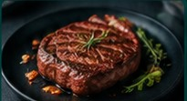
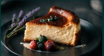

Смены, персонал и поставки без хаоса в чатах
GastroConnect помогает заведениям быстро закрывать смены, работникам находить подработку, а поставщикам получать реальные запросы от ресторанов и кафе.
повара, официанты, бариста
по активным заявкам
продукты, клининг, оборудование
Калькулятор заработка на сменах
Меню и технологические карты
Возможности для заведений →

Ищите смены, работников и поставщиков с первого экрана
Формат Alot.Pro, но для HoReCa: вкладки, фильтры, быстрые карточки и прямой переход в регистрацию нужной роли.
Внутри не лендинг, а рабочая лента
Заведение публикует смену, работник откликается, поставщик получает запрос. Всё это собрано в кабинетах по ролям.
Москва, Арбат · сегодня 17:00-23:00
Кофейня · завтра 08:00-14:00
Готов выйти сегодня, ставка от 350 ₽/час
Работник ждёт ответа заведения
от 5 кг · доставка по Москве
Заведение отправило заявку поставщику
Платформа работает как операционный штаб
Заведение видит работников, публикует смены, получает отклики и держит поставщиков в одном месте.
Закрывайте смены быстрее
Публикуйте заявки, приглашайте работников из базы, фильтруйте по профессии, ставке, графику и готовности к выезду.
Для сотрудниковБерите понятные смены
Заполните профиль, смотрите доступные смены, откликайтесь и принимайте приглашения от заведений.
Для поставщиковПолучайте входящие запросы
Публикуйте предложения по товарам и услугам, а заведения отправляют заявки прямо в кабинет поставщика.
Не доска объявлений, а рабочий процесс
Система собирает смены, профили, отклики, приглашения и поставки в одну цепочку. Минимальный MVP уже работает на статическом фронте, Supabase и локальном fallback.
Что уже заложено в MVP
Функции, которые нужны, чтобы сайт перестал быть “витриной” и начал работать как сервис.
Публикация и отклики
Заведение создаёт смену, работник видит её в кабинете и отправляет отклик.
Профили всех ролей
Работники, заведения и поставщики ведут отдельные профили, чтобы заявки были понятными и проверяемыми.
Офферы и заявки
Поставщики публикуют предложения, заведения отправляют запросы по нужным позициям.
Почему выбирают GastroConnect
Мы собираем заявки, смены, поставки и коммуникацию в один понятный процесс для Москвы и Московской области.
Быстрый запуск
Заведение оставляет задачу, работник или поставщик видит её по роли, а админ контролирует входящие заявки.
Без лишнего шума
Не нужно держать десятки чатов: отклики, приглашения и запросы лежат в кабинете и в админской базе.
Фокус на HoReCa
Повар, официант, поставщик рыбы или молочной продукции — все сценарии заточены под кафе, кухни и рестораны.
Понятные контакты
На сайте есть контакты, обратная связь, юридические страницы и заявка на Telegram-уведомления.
Закрываем задачи бизнеса, сотрудников и поставщиков
От срочной смены на кухне до заявки на продукты, клининг, оборудование или доставку.
Отзывы предпринимателей, сотрудников и поставщиков
Живые сценарии платформы: кто ищет людей, кто берёт смены и кто получает заявки от заведений.
Алексей, владелец кафе
Заведение · МоскваНужно было срочно закрыть смену повара. Оставил заявку, получил отклик и спокойно вышел в вечерний пик.
Марина, повар
Сотрудник · ПодработкаУдобно, когда смены и приглашения видны в кабинете. Не нужно искать по чатам, где дата, ставка и адрес.
Роман, поставщик продуктов
Поставщик · Молочная продукцияДля нас важно получать конкретные запросы: что нужно, сколько килограмм, куда везти. Так проще отвечать заведению.
Ольга, управляющая
Ресторан · ОперационкаНравится идея одного места для персонала и поставок. Для ресторана это экономит время администратора каждый день.
Начните с регистрации или заявки
Создайте аккаунт для своей роли или оставьте контакт — мы поможем подключить заведение, сотрудника или поставщика.
Частые вопросы
Как найти смену?
Выберите вкладку «Смены» в поиске, укажите город и профессию, затем откройте подходящее предложение.
Как закрыть срочную смену?
Создайте профиль заведения, опубликуйте смену и просматривайте отклики в кабинете.
Когда производится выплата?
Условия оплаты указываются заведением в карточке конкретной смены.
Как поставщику попасть в каталог?
Зарегистрируйтесь как поставщик и добавьте предложения в своём кабинете.